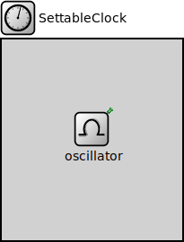

Package: inet.clock.model
SettableClock
compound moduleModels a clock which can be set to a different clock time. The clock time can be set from C++ or using a <set-clock module="..." time="..."/> command in a ScenarioManager script.
<b>See also:</b> ~ScenarioManager
Inheritance diagram
The following diagram shows inheritance relationships for this type. Unresolved types are missing from the diagram.
Extends
| Name | Type | Description |
|---|---|---|
| OscillatorBasedClock | compound module | (no description) |
Parameters
| Name | Type | Default value | Description |
|---|---|---|---|
| displayStringTextFormat | string | "%t (%c)" |
determines the text that is written on top of the submodule |
| referenceClock | string | "" |
full path of reference clock |
| emitClockTimeInterval | double | 0s |
non-zero value means the clock time will be emitted periodically |
| initialClockTime | double | 0s |
clock time at the simulation time when the module is initialized |
| roundingMode | string | "up" |
when scheduling to a clock time or with a clock delay this clock uses rounding with respect to the nominal tick length |
| defaultOverdueClockEventHandlingMode | string | "error" |
Properties
| Name | Value | Description |
|---|---|---|
| class | SettableClock | |
| display | i=block/timer |
Signals
| Name | Type | Unit |
|---|---|---|
| timeChanged | simtime_t |
Statistics
| Name | Title | Source | Record | Unit | Interpolation Mode |
|---|---|---|---|---|---|
| timeChanged | Clock time | vector | linear |
Source code
// // Models a clock which can be set to a different clock time. The clock time // can be set from C++ or using a <set-clock module="..." time="..."/> command // in a ScenarioManager script. // // @see ~ScenarioManager // module SettableClock extends OscillatorBasedClock { parameters: string defaultOverdueClockEventHandlingMode @enum("execute","skip","error") = default("error"); @class(SettableClock); }File: src/inet/clock/model/SettableClock.ned
 This documentation is released under the Creative Commons license
This documentation is released under the Creative Commons license